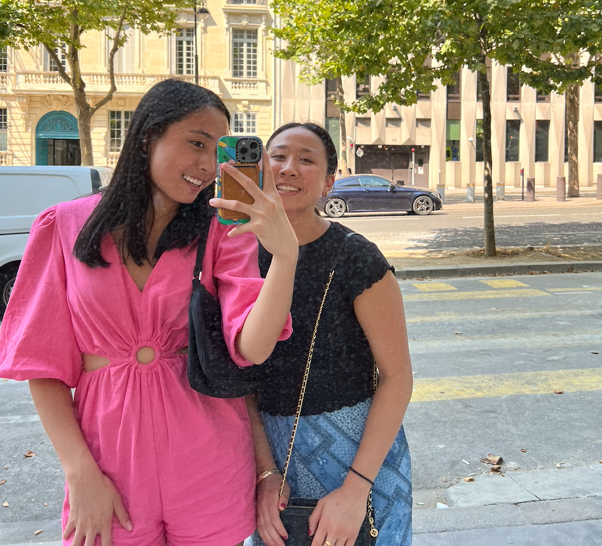

One of my favorite foods is caesar salads.
I have a sweet tooth, so I love candy and desserts.
One of my favorite snacks is popcorn, specifically Angie's Sweet & Salty Kettle Corn.
Along with computer science, I'm passionate about chemistry.
This summer, I'm interning for a chemistry lab at UC Berkeley.
I don't have a favorite song, but I like listening to Taylor Swift and boygenius.
I love concerts! Most recently, I went to the Eras Tour in Chicago.
Click here for one of my go-to playlists.
I'm currently learning how to rock climb (hence the climbing theme).
I track my climbs using this app.
Here's a picture of me!
This is my with my older sister. I also have a younger brother (who does not enjoy posing for photos as much).
This is my third Kode With Klossy camp. I did mobile app development in 2021 and data science in 2022.
Hi! My name is Megan Lu. I'm a rising senior from the Chicagoland area.